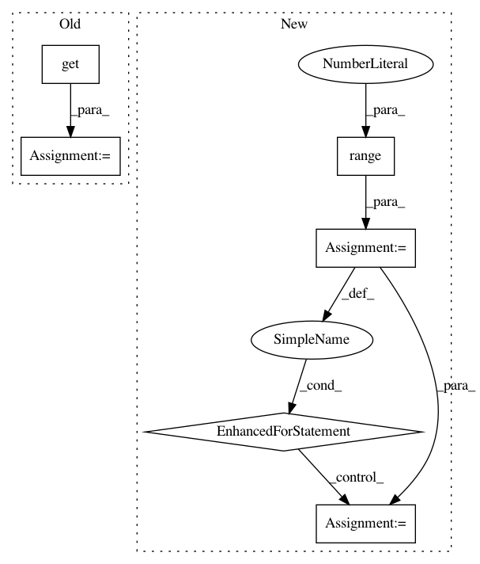

449e900ef018a775f2827dd3e591900c761004ab,perfzero/lib/benchmark.py,BenchmarkRunner,run_benchmark,#BenchmarkRunner#,112
Before Change
self.config, queue))
process.start()
process.join()
method_has_exception, method_execution_time, succeeded, output_dir = queue.get() // pylint: disable=line-too-long
has_exception |= method_has_exception
self.benchmark_execution_time[benchmark_method] = method_execution_time
benchmark_success_results[benchmark_method] = succeeded
After Change
benchmark_methods = self._get_benchmark_methods()
print("Setup complete. Running {} trials".format(num_trials))
for trial_id in range(1, num_trials + 1):
print("Running trial {} / {}".format(trial_id, num_trials))
(trial_has_exception, trial_success_results,
trial_output_dirs, trial_execution_time) = self._run_benchmarks_trial(
harness_info, site_package_info, benchmark_methods, trial_id)
trial_key = "trial_{}".format(trial_id)
has_exception |= trial_has_exception
self.benchmark_execution_time[trial_key] = trial_execution_time
benchmark_success_results[trial_key] = trial_success_results
benchmark_output_dirs[trial_key] = trial_output_dirs
finally:
if self.config.tpu_parameters is not None:
has_exception |= utils.cleanup_tpu(self.config.tpu_parameters)
In pattern: SUPERPATTERN
Frequency: 3
Non-data size: 6
Instances
Project Name: tensorflow/benchmarks
Commit Name: 449e900ef018a775f2827dd3e591900c761004ab
Time: 2020-06-16
Author: 53017143+sganeshb@users.noreply.github.com
File Name: perfzero/lib/benchmark.py
Class Name: BenchmarkRunner
Method Name: run_benchmark
Project Name: stanfordnmbl/osim-rl
Commit Name: a206bf582dc40253dabaf5cb0f878416dce7cfd7
Time: 2016-10-18
Author: lukasz.kidzinski@gmail.com
File Name: python/deepcontroller.py
Class Name:
Method Name:
Project Name: stanfordnmbl/osim-rl
Commit Name: 83e8db148acc7a2643285ac854ee4ee947510728
Time: 2016-10-29
Author: lukasz.kidzinski@gmail.com
File Name: python/deepcontroller.py
Class Name:
Method Name: